01
世界杯决赛：阿根廷点球大战击败法国 梅西宣布从国家队退役
2026年美加墨世界杯决赛在迈阿密硬石体育场精彩落幕，阿根廷通过点球大战5-3战胜法国，成功卫冕世界杯冠军。法国前锋姆巴佩在点球大战中罚失关键点球，35岁的梅西赛后正式宣布从国家队退役。全球超过25亿观众通过直播见证了这一历史性时刻，法国总统马克龙现场观战并称赞法国队的拼搏精神。
体育
2026年美加墨世界杯决赛在迈阿密硬石体育场精彩落幕，阿根廷通过点球大战5-3战胜法国，成功卫冕世界杯冠军。法国前锋姆巴佩在点球大战中罚失关键点球，35岁的梅西赛后正式宣布从国家队退役。全球超过25亿观众通过直播见证了这一历史性时刻，法国总统马克龙现场观战并称赞法国队的拼搏精神。
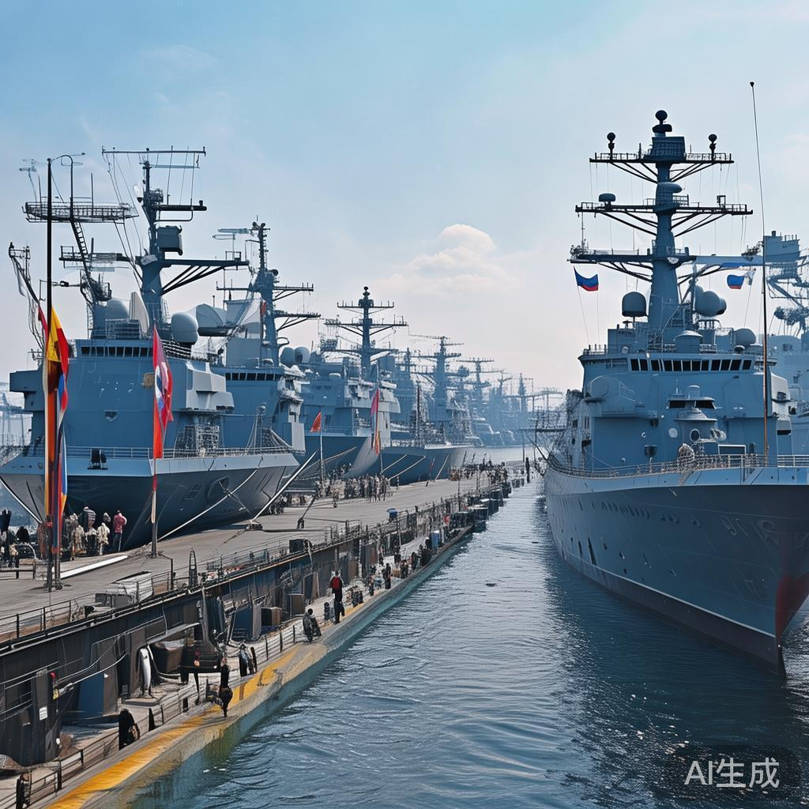
中俄"海上联合-2026"联合演习在山东青岛正式启动，这是两国海军首次在青岛举行如此大规模演习。中方派出驱逐舰、护卫舰、潜艇等多型主战舰艇参演，俄方舰艇编队也已抵达青岛军港。演习将重点围绕海上联合补给、联合反潜、防空等科目展开。
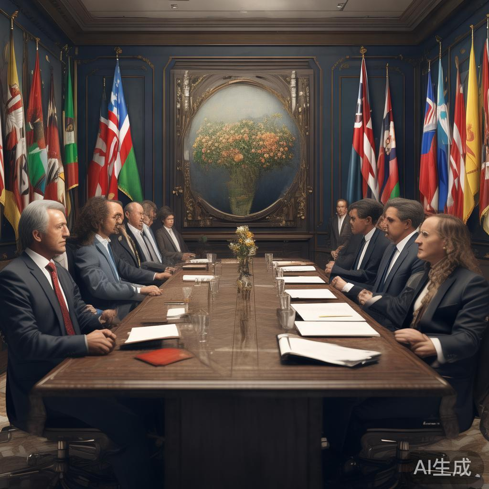
美国前总统特朗普与俄罗斯总统普京进行电话会谈后表示，愿意帮助调解结束俄乌战争。克里姆林宫发言人称这次通话具有建设性意义。乌克兰总统泽连斯基随后表示已与特朗普通话，讨论了长达1200公里的前线局势。北约峰会即将召开，各方就如何结束冲突展开密集外交斡旋。
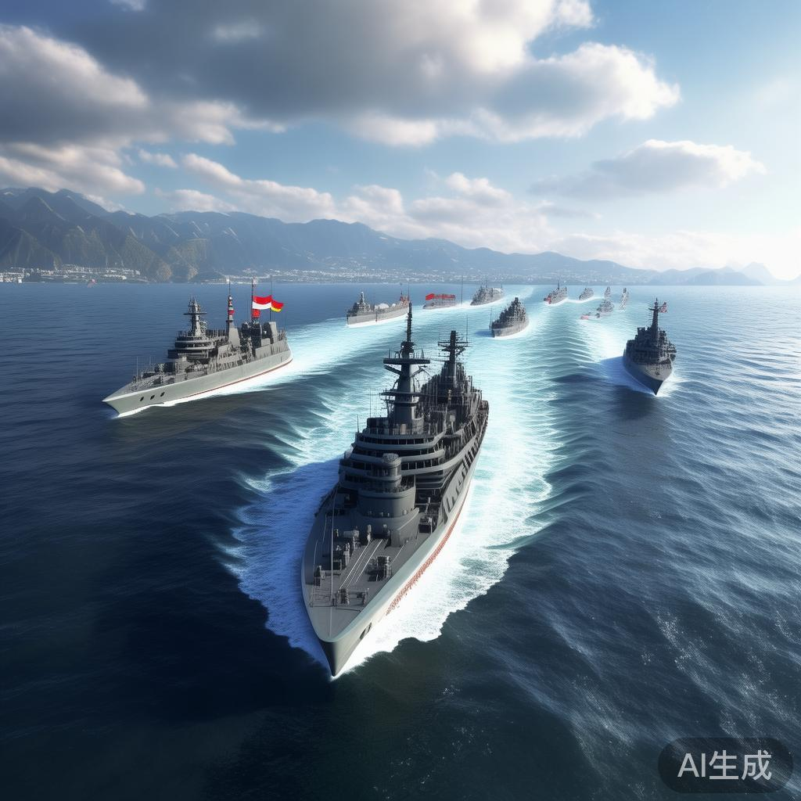
日本防卫省统合幕僚监部发布消息，中国海军舰艇编队近日穿越吐噶喇海峡、冲绳本岛与宫古岛之间海域、大隅海峡和对马海峡等日本四大要道。目前至少有7艘中国舰艇部署在西太平洋海域，活动频率和规模创近年新高。
中国人工智能企业智谱AI发布新一代多模态大模型GLM-5.3，在视频理解、图像分析和文本生成等多项国际基准测试中超越GPT-5。该模型首次实现对长视频的完整理解与深度分析，支持一键生成专业级视频解说词。
比特币价格重返11万美元关口，为2026年以来首次创下历史新高。机构投资者持续涌入加密货币市场，贝莱德、富达等资管巨头的比特币ETF持仓量持续增加。分析师认为美联储降息预期、比特币减半效应以及机构采用率提升是本轮上涨的主要驱动力。
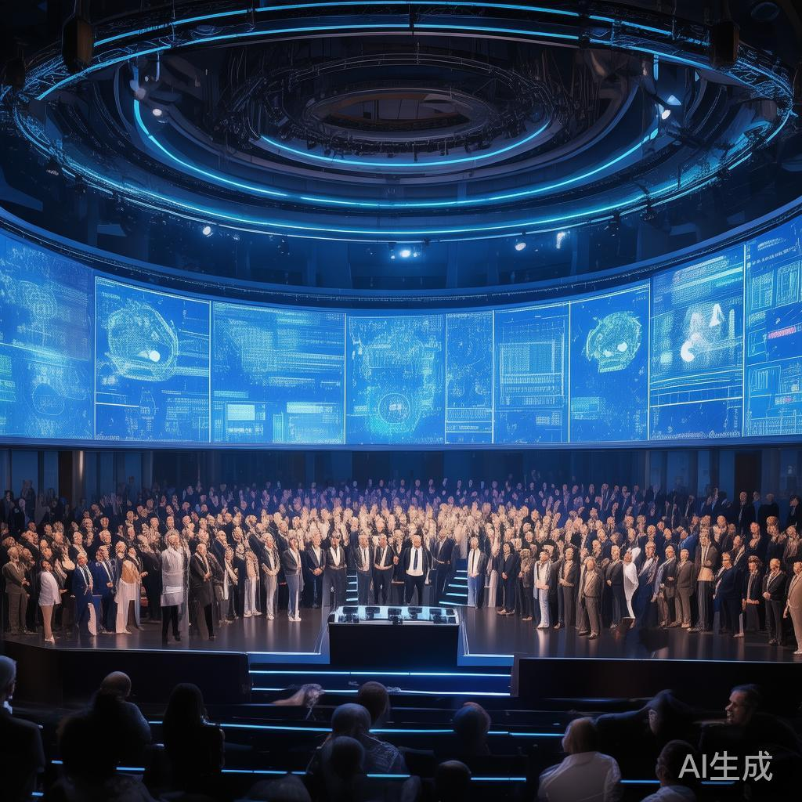
达沃斯科技峰会2026在辽宁省大连市隆重开幕，主题为在变局中构建科技未来。全球2000多名科技领袖、企业家和学者参会，重点讨论人工智能伦理治理、量子计算突破、太空商业化等议题。
野火在法国南部、西班牙和意大利多地持续蔓延，迫使数万居民紧急撤离家园。法国政府宣布南部四省进入紧急状态，环法自行车赛因途经火区被迫更改路线。欧盟启动民防机制，协调成员国消防资源支援。
乌克兰无人机袭击了俄罗斯西伯利亚地区最大的炼油厂，该设施距离乌克兰边境超过2500公里。此前该炼油厂是俄罗斯十大炼油企业中唯一未被乌军无人机触及的企业。袭击导致炼油厂部分设施起火，俄罗斯防空系统未能有效拦截。
日本首相高市早苗访问印度新德里，与印度总理莫迪举行会谈，双方探讨深化经济安全与战略合作。两国签署多项合作协议，涉及半导体供应链、清洁能源和国防技术领域。
据多家媒体报道，阿里巴巴将禁止员工使用Anthropic的编程工具Claude Code，该禁令将于7月10日起生效。Anthropic此前已禁止中国公司及在华外资企业使用其模型。报道称阿里巴巴被指控对其Claude模型进行模型蒸馏提取能力。
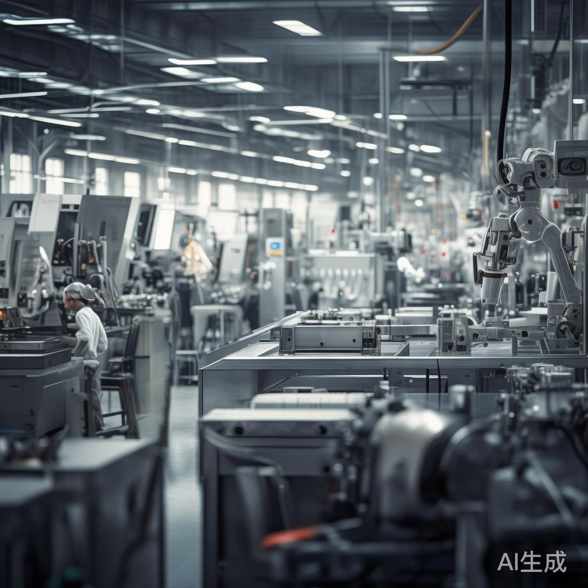
德国中小企业群体被称为隐形冠军，长期是德国经济支柱和出口主力。然而，中国制造业快速升级对这些细分市场龙头形成激烈竞争。德国工业协会呼吁政府加大对中小企业的研发补贴和税收优惠。
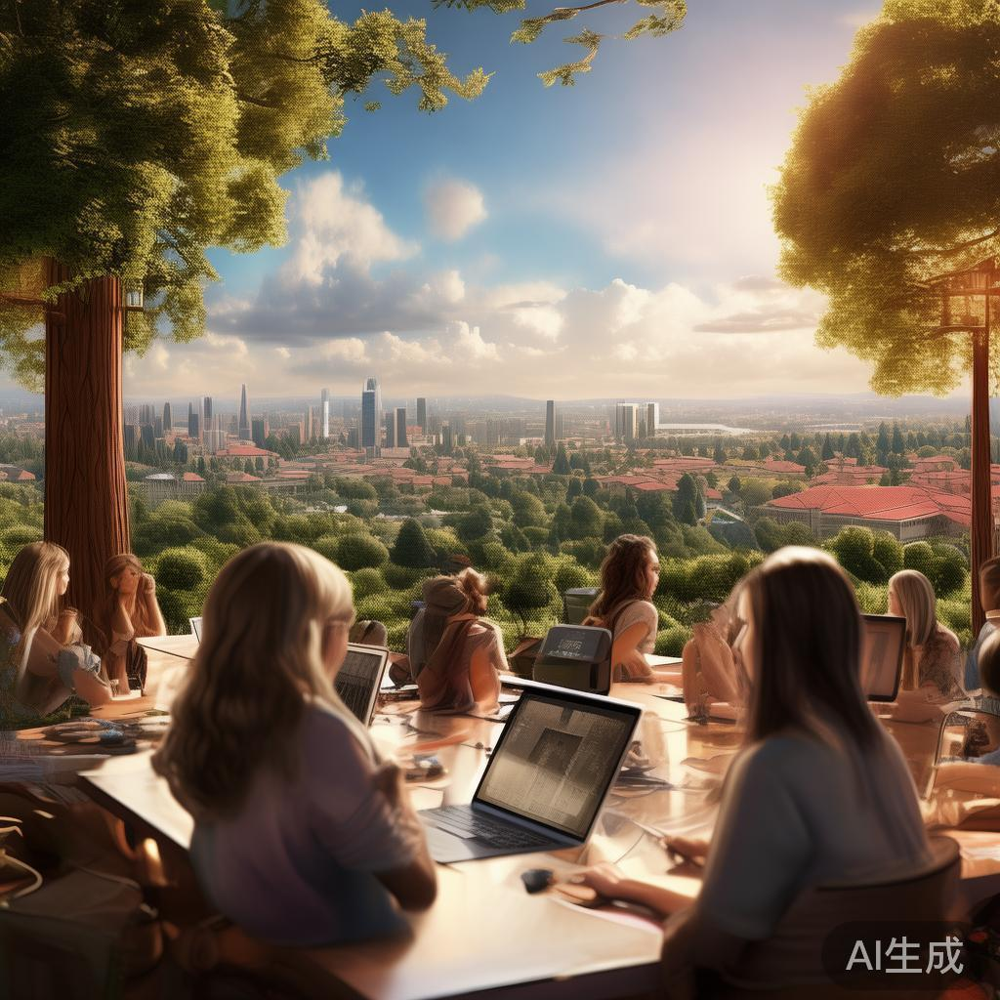
斯坦福大学发布2026年AI与就业报告，显示75%的应届毕业生在学业中广泛使用AI工具。报告指出AI正在重塑人类技能结构，部分重复性工作机会减少但新岗位涌现。
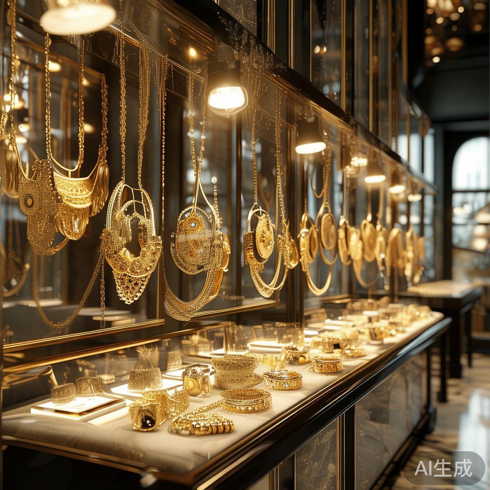
国际金价持续回调，国内金饰价格年内跌幅已超过500元/克。目前10年期美债收益率升至4.6%以上，实际利率回落降低了黄金吸引力。分析指出金饰价格阶段性见顶，央行购金与实物需求中长期配置逻辑未变但短期节奏放缓。
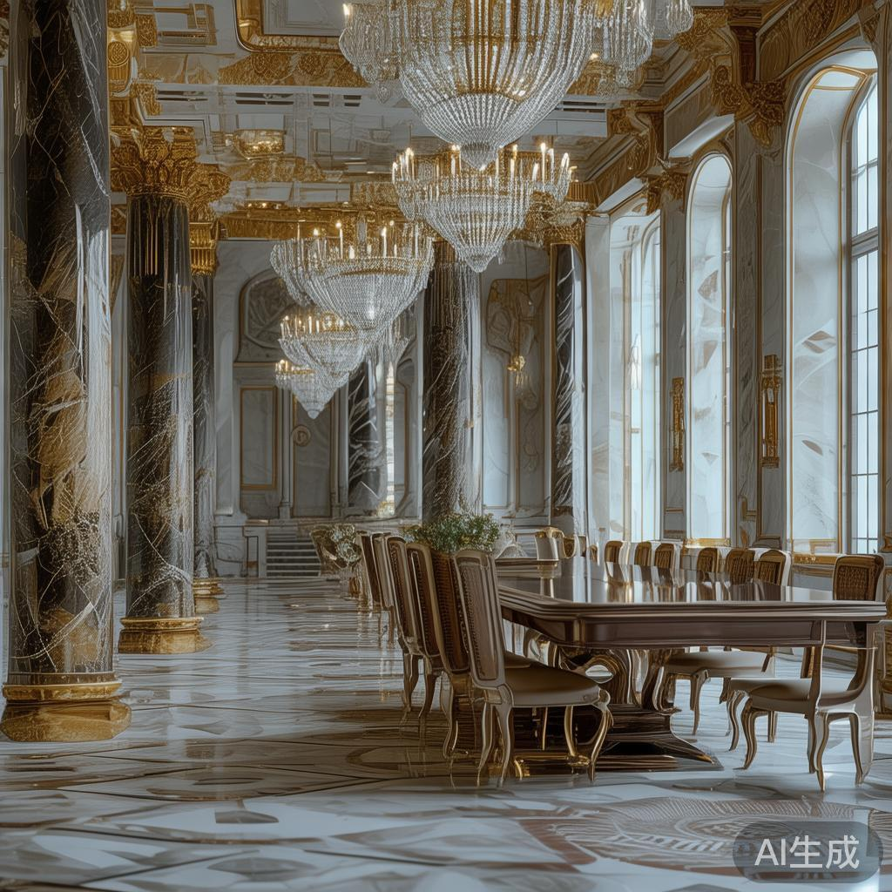
当地时间7月5日，中共中央政治局委员、外交部长王毅在赫尔辛基与芬兰外长瓦尔托宁举行会谈。王毅表示，芬兰是最早同新中国建交的西方国家之一，也是第一个同中国签订政府间贸易协定的西方国家。
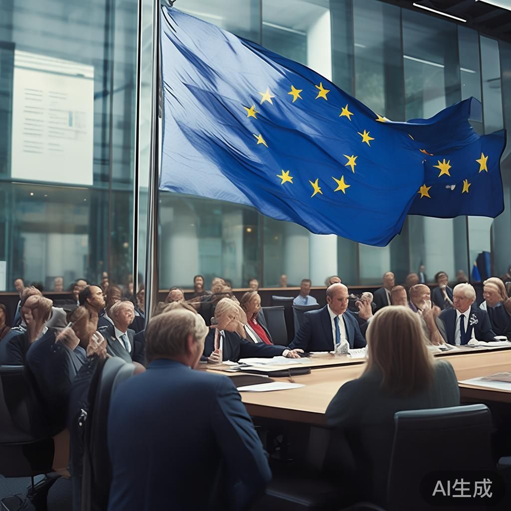
欧盟委员会主席冯德莱恩就欧盟与中国贸易关系发表讲话，表示欧盟应继续就贸易失衡问题同中国进行对话，将明确提出中国过剩商品涌入欧洲市场等问题。
日本股市经历剧烈调整，主要股指较高点回落超过50%，引发市场对泡沫破裂的担忧。日本央行此前持续收紧货币政策，推动日元升值并压缩出口企业利润。
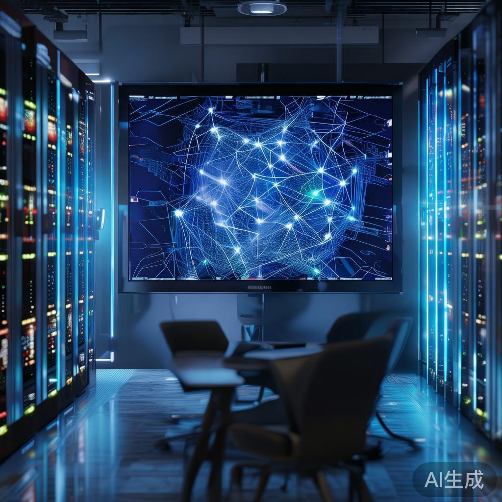
中国AI初创公司DeepSeek发布新型推理技术，在保持模型能力的同时将推理效率提升10倍，计算成本下降90%。该公司此前发表相关技术论文后，谷歌也采用类似技术路径。
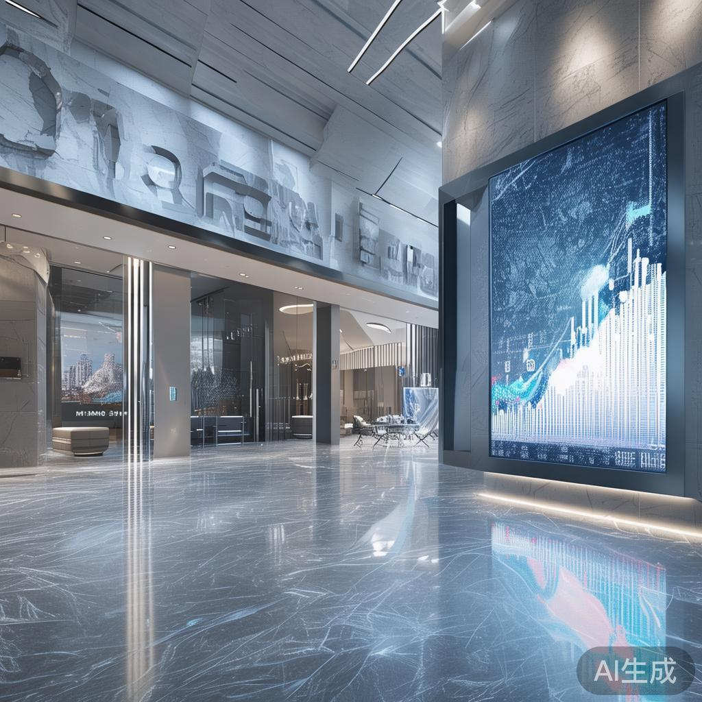
人工智能领军企业OpenAI完成新一轮超过100亿美元融资，估值达到4000亿美元，超越Stripe成为全球估值最高的私营科技公司。微软继续跟投，软银愿景基金首次入股。
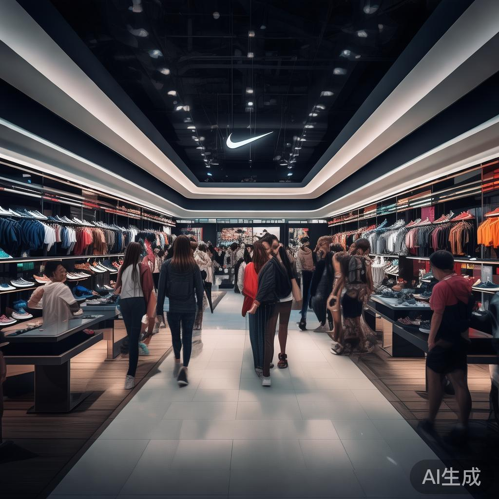
运动品牌耐克公布2026财年第四季度财报，大中华区营收连续第八个季度下滑，跌幅超过3%。耐克表示中国消费者偏好国产品牌、电商竞争加剧以及库存问题是主要挑战。
💬 评论区